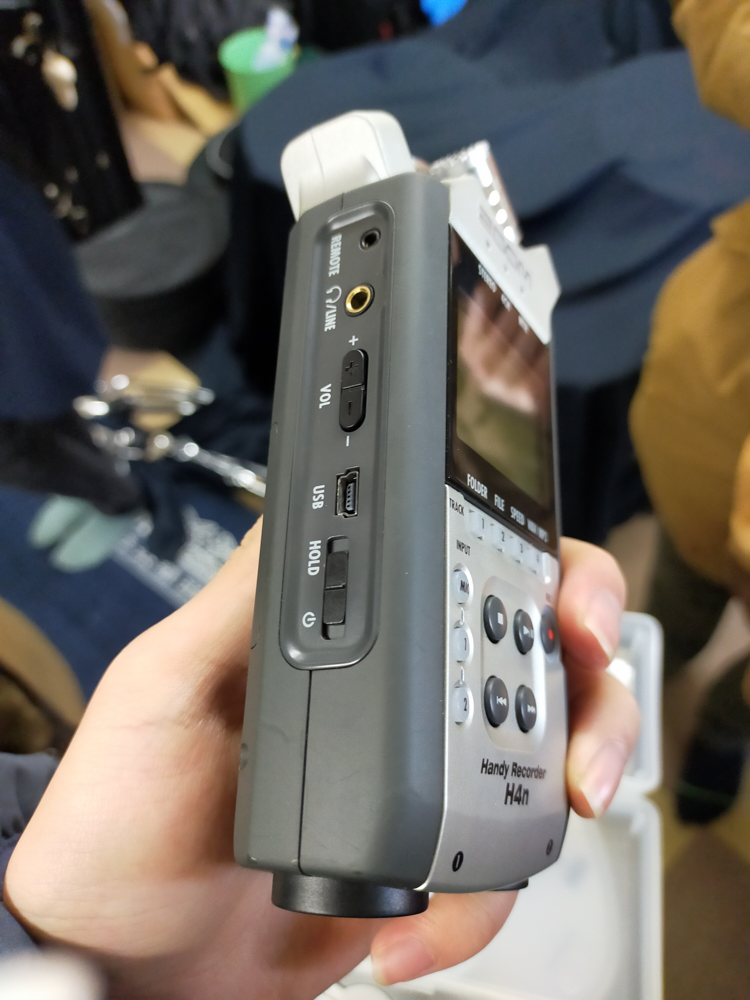
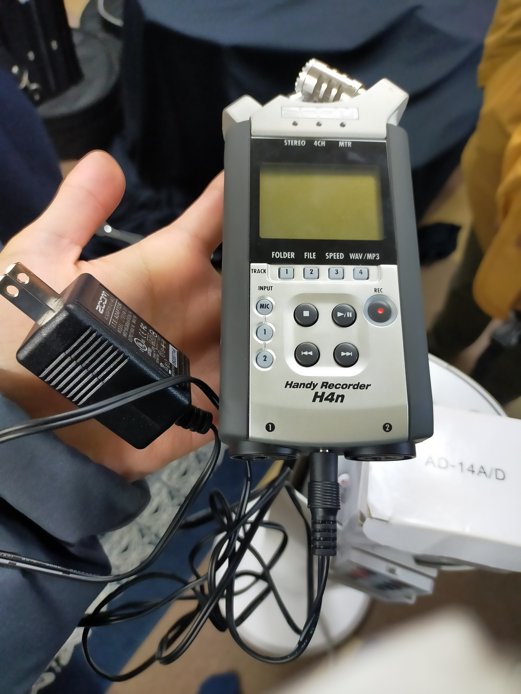
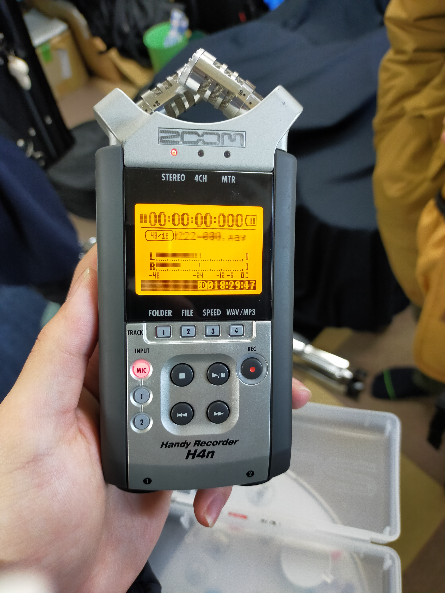
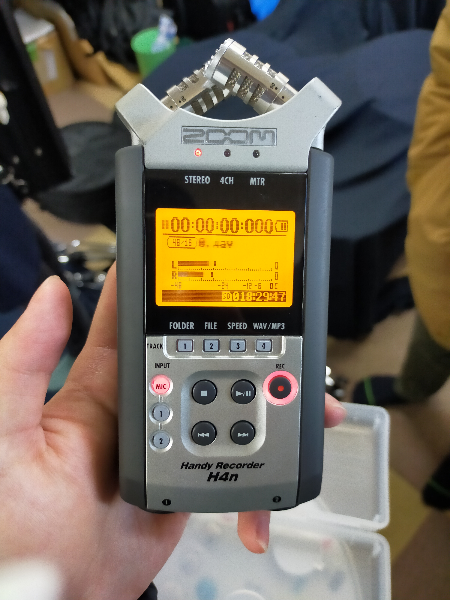

しつかんのレコーダーの簡単な使い方
 |
しつかんのレコーダー(ZOOM H4nPro, 写真左側)を使った合奏の録音方法について簡単に説明します．
1 準備
1.1 講義室に持っていくもの
レコーダー(ZOOM H4nPro)の入った箱と延長ケーブル，予備の電池(あれば)．
1.2 箱から取り出したらやること
箱からレコーダーを取り出したら，SDカードスロットにSDカードが挿入されているか確認します．次に，風切り音(ボワってなるやつ)を防止するため，マイクを付属の黒いスポンジで覆います．
白い箱に入ったACアダプターをレコーダー底面のDC5V端子に接続します．この黒いケーブルはそんなに長くないので，延長ケーブルをつかって講義室のコンセントに接続してください．(レコーダーは電池でも動きますが，常にフル充電の予備電池があるかわからないのでなるべくコンセントから給電してください．予備の電池が準備できているなら電池でもかまいません．)
|  |  |
2 合奏の録音
2.1 電源の入れ方とまず確認すべきこと
電源は左側面にあります．POWERスイッチをスライドすることで電源のオン/オフができます．電源が入ったら，右下の録音可能時間を確認します(表示は，時：分：秒です)．のこり1時間を切っていたら録音データを削除して空き容量を増やしましょう．電池を使っているときは電池の残量も確認してください．次に，左側のINPUTの下のMICと書かれたボタンが点灯していることを確認してください．(MICは内蔵マイクからの入力を意味しています．1, 2は外部入力用です．)
2.2 入力感度を調整する
次に，右側のRECボタンを押すとRECボタンが点灯し録音待機状態になります．RECを1回押しただけでは録音が始まらないことに注意してください．
録音待機状態ではディスプレイに入力レベルが表示されます．このゲージが右端の0を超えると音割れしてしまうので，右側面のREC LEVELのプラスマイナスボタンを押して入力感度を調整します．音量調整は，合奏メンバーに曲の中で一番音の大きい箇所を演奏してもらい，そのときに音割れしていないかチェックすると確実です．音割れするとランプが点滅します．
私の経験からすると，楽器の数や曲にもよりますが，金管楽器やドラムは35-40，木管楽器は40-50，弦楽器は50-60ぐらいが適正と思います．
|  |  |
2.3 録音を開始する
録音待機状態でもう一度RECボタンを押すと録音が開始します．●マークが表示され，経過時間を示すカウントアップが始まっていれば録音中ということです．カメラ側の録画も開始していることを確認して，音声同期用に手をパシッと叩きます．そして演奏を始めてください．
2.4 録音を停止する
録音を停止するときは，真ん中左側の停止ボタンを押します．RECボタンが消灯します．続いて録音するときは，上と同じ操作を繰り返します．
2.5 録音を再生する
再生ボタンを押せばミュージックプレイヤーのように録音したデータを再生することができます．裏側に内蔵スピーカーがありますが，音質がよくないので左側面の端子にイヤホンを挿したほうが良いと思います．再生音量は左側のVOLUMEで調整します．
3 いくつかのTips
- レコーダーを直接机に置くと足音などをひろってしまうので，マフラーやタオルなどの柔らかい布の上に置いて録音するとよいです．
- 録音開始直後または停止直前に「これは◯回目の演奏です」のようにレコーダーとカメラに聞こえるように吹き込んでおけば，後で映像と同期する際にどの録音データがどの動画データに対応するのか分かりやすくなります．
- このレコーダーは高性能なので色々な機能がついています．詳しくは公式マニュアル(https://www.zoom.co.jp/sites/default/files/products/downloads/pdfs/J_H4n_Pro_0.pdf)を確認してください．
作成日: 2022-02-23